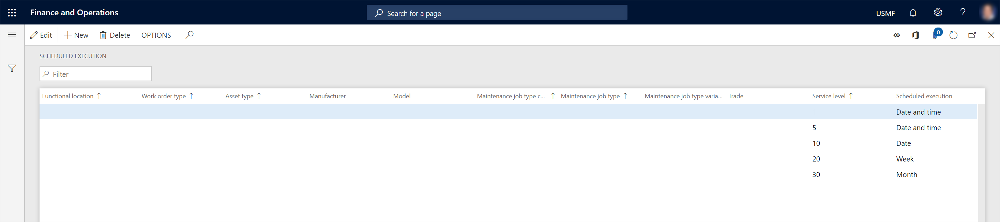

Geplante Ausführung
Important
Dynamics 365 for Finance and Operations hat sich zu speziell entwickelten Anwendungen entwickelt, mit denen Sie bestimmte Geschäftsfunktionen verwalten können. Weitere Informationen zu diesen Änderungen finden Sie im Dynamics 365-Lizenzierungshandbuch.
Sie können die Service Levels für Arbeitsaufträge verwenden, um die geplante Ausführung einzurichten. (Weitere Informationen zu den Service Levels der Arbeitsaufträge finden Sie unter Service Level und Beschreibung.) Die planmäßige Ausführung bietet Flexibilität bei der Arbeitsplanung für Instandhalter, da Sie für das Intervall, in dem ein Arbeitsauftrag abgeschlossen werden soll, detailliertere oder weniger detaillierte Anforderungen einrichten können. So kann beispielsweise ein Wartungsmitarbeiter, der einen Auftrag in einer Produktionsstätte schneller als erwartet erledigt, zu einem anderen nahegelegenen Auftrag wechseln, der für die aktuelle Woche geplant war, aber nicht unbedingt für den aktuellen Tag. Dieser Ansatz ermöglicht die Optimierung der Arbeitsvorbereitung und der Auftragsabwicklung.
Die Einrichtung der geplanten Ausführung, die sich auf Arbeitsaufträge bezieht, kann generisch oder spezifisch sein. Sie können generische Zeilen einrichten, die nicht auf bestimmte Arbeitsauftragsarten, Anlagentypen usw. beschränkt sind. Alternativ können Sie auch geplante Ausführungspositionen erstellen, die sich auf eine bestimmte Arbeitsauftragsart, Anlagenart, Wartungsauftragsart usw. beziehen.
- Wählen Sie Anlagenmanagement > Einrichtung > Arbeitsaufträge > Planausführung.
- Wählen Sie Neu, um eine geplante Ausführungsposition zu erstellen.
- Wählen Sie in den Feldern Technischer Standort, Auftragsart, Assettyp, Hersteller, Modell, Wartungsauftragstyp Kategorie, Wartungsauftragstyp, Wartungsauftragstyp Variante und Wechseln die gewünschten Werte aus.
- Wählen Sie im Feld Service Level ein Service Level für Arbeitsaufträge aus. Wenn Sie dieses Feld leer lassen, machen Sie den generischsten Typ der geplanten Ausführungslinie. Ein Beispiel für eine generische Zeile finden Sie im ersten Satz in der folgenden Abbildung. Diese Position ermöglicht es, alle Arbeitsaufträge, die keinen Servicegrad für Arbeitsaufträge haben, für ein bestimmtes Datum und eine bestimmte Uhrzeit zu planen.
- Wählen Sie im Feld Geplante Ausführung das Zeitintervall aus.
- Wählen Sie Speichern.
